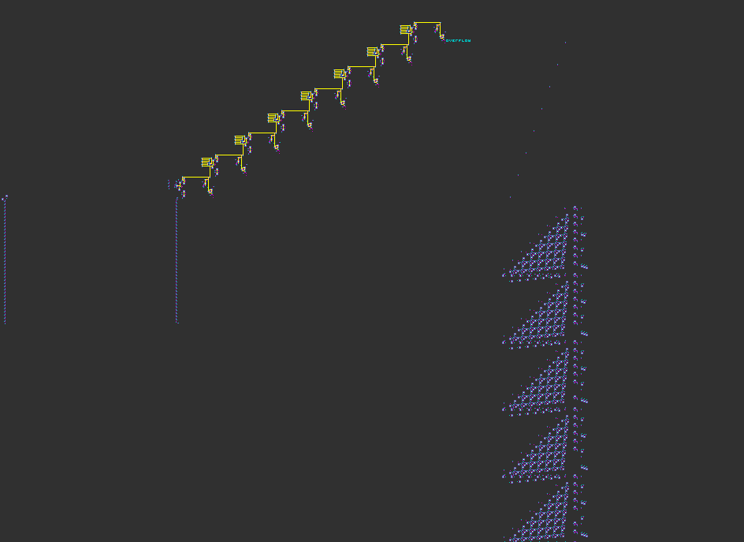
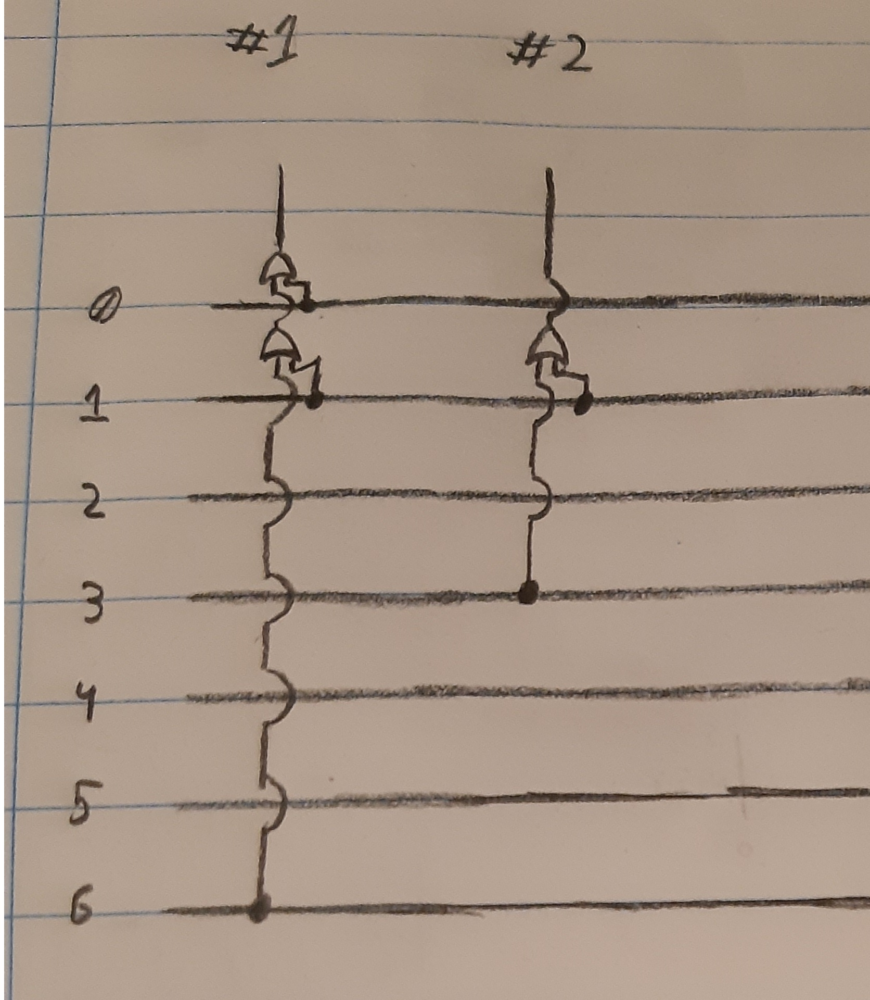

Identity Comparator Array & Reading off of it
This is it. The Identity Comparaty array complete with 256 8 bit bridges, 256 Default Identity comparators,
and the neccesary NOT gates to make them Identity comparators to all possible states instead.
E.g. (n==0, n==1, n==2 ... n==254, n==255)
I copy&pasted our bridges with their default Identity Comparators 256 times.
Then wrote a short processing program to determine the position of the NOT gates.
String NOT = ".LIL$.IOI$IL.L$.L.LIL$.IL2.L$5.I";
int emptyLines = 1;
int addedNots = 0;
void setup(){
println("x = 6, y = 6, rule = Beam");
for(int i = 0; i < 21752; i++){
emptyLines++;
int spanIndex = (i%85); //from 0 to 84 within a 8 bit bridge
if(spanIndex > 70) continue;
int byteIndex = i/85;//which of the 256 8 bit bridges we're next to
if(spanIndex%10==0){
int bitIndex = spanIndex/10;
if((byteIndex & ( (char)128 >>> bitIndex)) == (byte) 0){
print(emptyLines);
print('$');
print(NOT);
addedNots++;
if(addedNots%4==0) println();
emptyLines = 1;
i+=6;
}
}
}
print('!');
exit();
}

Now we have to read from each of the 256 Identity Comparators to get the byte value and determine
which of the 21 segments in the 3 7-segment-displays will be on at which times.
For each of the 21 segments, we will take note of which bytes turn on said segment.
Let's call all byte values that can turn on a given segment, for the segment's "ON states",
and that that does not turn it on, its "OFF states".
For a given segment, its ON states will all be split in two, such that the beam
continues eastwards, and goes northwards too as to be read.
Only the ON state with the highest value will be without a bridge attached, and all states lower
than that will have a bridge (both ON and OFF states), so it can be passed all the way up to the
top. Where other ON states split off and
do have a bridge next to them, they will combine
in an OR gate, and continue being passed on together.

#1: A hypothetical segment, being turned on by EITHER byte value 0,1, or 6
#2: A hypothetical segment, being turned on by EITHER byte value 1, or 3
Our
real segments, and their ON states, can be found in this
very extensive truth table:
We
ONLY use the "common
cathode"
One can also use the "common anode" table to build the circuit described above, but with 3 key changes:
- Read from/split the OFF states
- When combining the immediately split beam and bridged beam, use AND gates
- Add a NOT gate infront of each of the 21 segments we will be designing in next chapter
Here's our copy&paste code for our Identity comparator array
reader, that was also contructed with the help of processing,
pasted into Golly, and re-copied as to make for the most optimal and compact code:
And that makes for this bad boy:
now that we've set up the reader, we can finally get onto the
ACTUAL 7-SEGMENT DISPLAYS, the most visual part of our tutorial